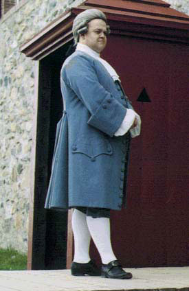

History in the Making provides reproduction civilian clothing for various periods throughout the 18th century, with an emphasis on 1740’s and 50’s gentlemen’s suits. We have done detailed research on this period, with special attention to fabrics and construction, to ensure the most authentic reproduction possible.
Please take the time to visit our Gallery page to see more on construction details of the period.